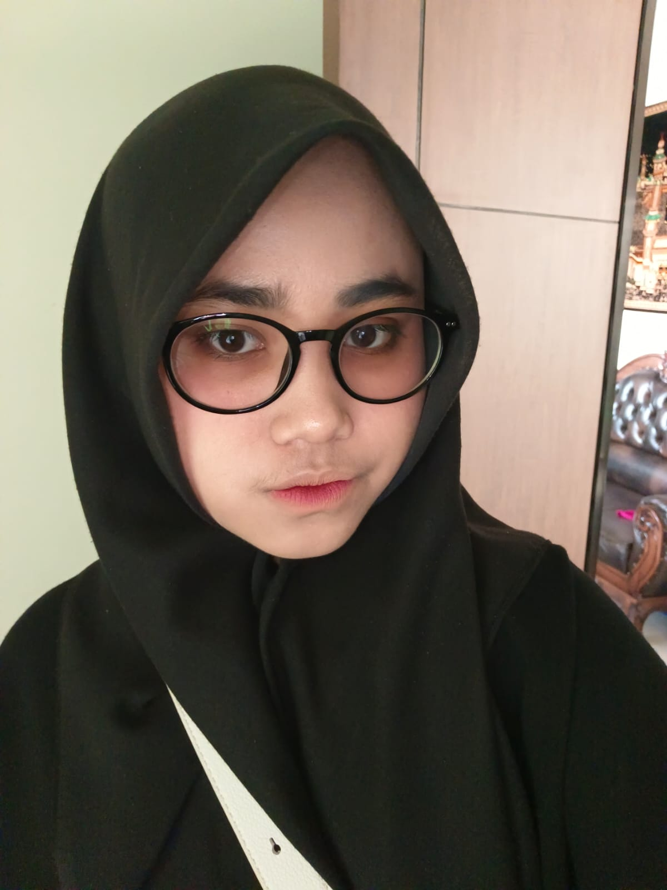

Graphic Design
Graphic Design  Web Development
Web Development  Python
Python  Illustration & Icon Design
Illustration & Icon Design 

InvestmentPal
I was trusted to handle this project end-to-end, transforming an old Facebook-like table-based structure into the UI shown in the screenshot without rebuilding the system from scratch. There were many technical constraints that other team members considered difficult, but I was able to resolve them efficiently. This project ultimately led to my promotion to a permanent employee at Doterb after completing one year as a contract developer.

Jack Don’t Swim
I’m proud of this project because the client discovered my work on Behance and contacted me directly via WhatsApp. I handled the entire process myself—from research and Figma design to developing the website and deploying it live. I also managed the hosting and domain setup using Domainesia. The project was delivered as a complete end-to-end solution and was priced at IDR 4,000,000. The website is no longer active as the client later migrated to another platform, but this project still represents the effort and work I put into building a full website solution independently.

Malasugi
This project came from the same repeat client as the Jack Don’t Swim project. I handled the full process as well, including research, Figma design, website development, and deployment. The goal was to create a simple, clean, and functional website based on the client’s needs. Although the site is no longer actively used today, it still reflects my ability to deliver a complete website project independently.

I am Nisa, 22y.o Programmer lived in Bandung, Indonesia. 1,5m feet girl, adaptive, focus and fast-learner working on Software engineering passionate in design and web development.